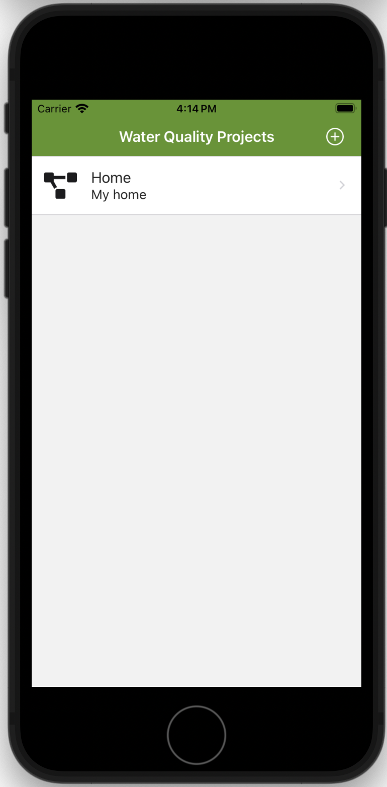

Tools and Solutions
by Ray Hooker
Currently we are developing tools for water quality analytics.
wqExplorer
wqExplorer - wqExplorer (Water Quality Explorer) is a mobile app for iOS and Android
devices designed to assist in the exploration of water quality data.
The goal is to provide quick access to data from online databases,
the ability to add adhoc collections of water quality data/ sampling and to generate basic charts and analysis for the data. For more detailed analysis, the app will provide the ability to export the data to a cloud drive for analysis using additional tools such as Python, R or SAS. The target audience is still to be determined but is envisioned to be citizen scientists and students.